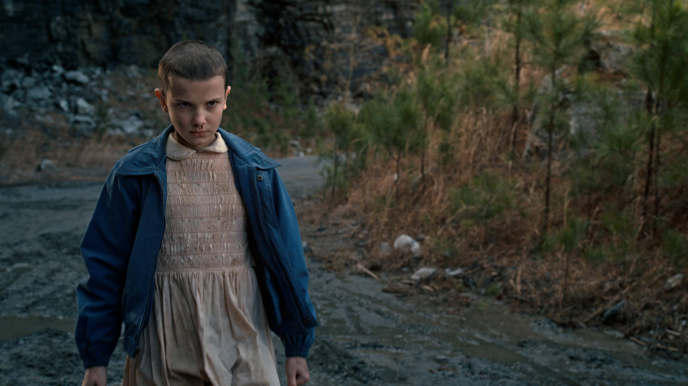
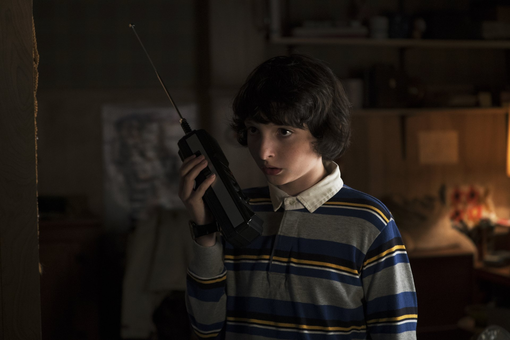
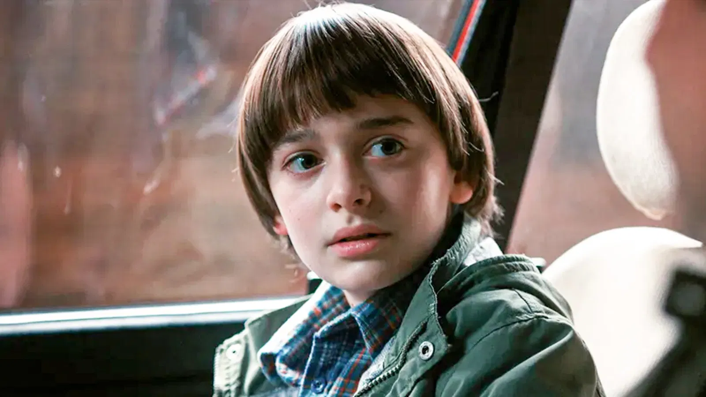
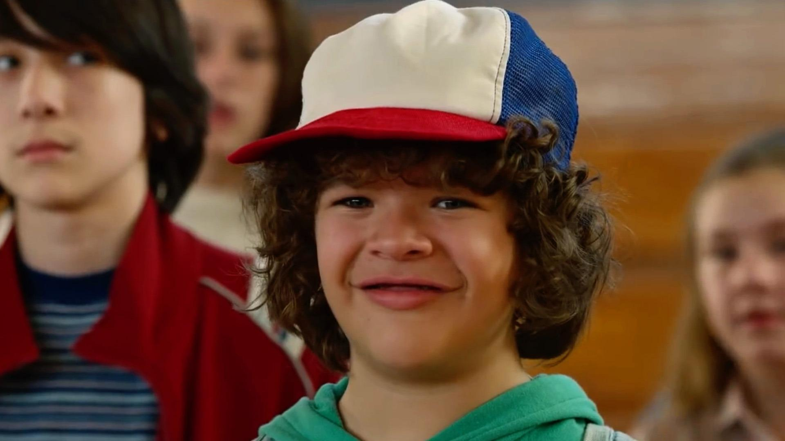
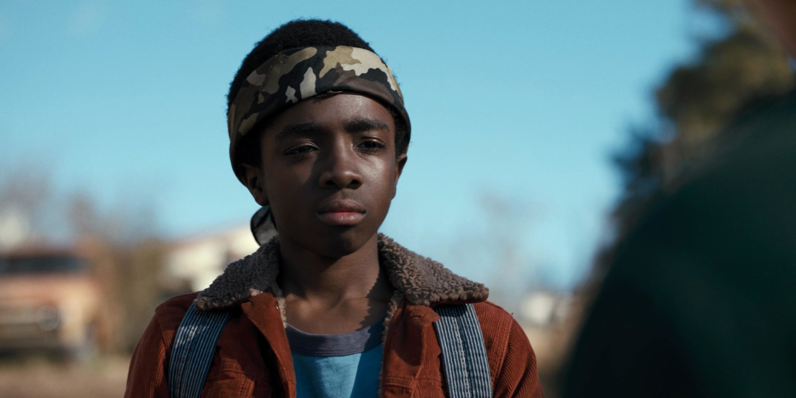
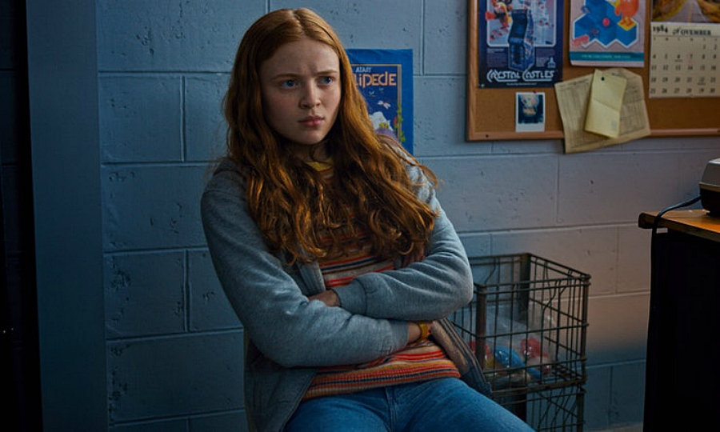

Stranger Things cuenta con una amplia variedad de personajes, cada uno con su propia historia y personalidad. A continuación, se presentan algunos de los personajes principales de la serie:
Eleven es el eje central de la historia, una joven con capacidades telequinéticas y telepáticas que fue criada en un aislamiento total dentro del Laboratorio Nacional de Hawkins. Durante años, fue sometida a experimentos científicos rigurosos bajo la supervisión del Dr. Martin Brenner, quien buscaba convertir sus habilidades en un arma táctica. Esta infancia traumática la dejó con un vocabulario limitado y un profundo desconocimiento del mundo exterior, hasta que su escape del laboratorio la lleva a cruzarse con Mike, Dustin y Lucas, quienes le otorgan su primera noción de pertenencia y afecto.
Su identidad está marcada por la lucha constante entre el monstruo que el gobierno intentó crear y la persona que ella elige ser. A pesar de su apariencia frágil, posee una fuerza mental capaz de enfrentar a criaturas de otras dimensiones, aunque el uso de sus poderes le agota físicamente y suele manifestarse a través de hemorragias nasales. A lo largo de la serie, Eleven pasa de ser un sujeto de prueba numerado a convertirse en una heroína que descubre la complejidad de las emociones humanas, la importancia de la autonomía personal y el valor de la lealtad hacia su familia elegida. Su arco evolutivo no solo trata sobre proteger a Hawkins, sino sobre encontrar su propia voz en un mundo que siempre intentó controlarla.

Michael "Mike" Wheeler es el líder natural y el corazón moral del grupo de amigos de Hawkins, asumiendo desde el principio el rol de "Paladín" que define su personalidad tanto en sus partidas de Dungeons & Dragons como en la vida real. Es un joven profundamente leal y decidido que no duda en poner en riesgo su propia seguridad para proteger a sus seres queridos, siendo él quien toma la iniciativa de buscar a Will tras su desaparición y quien decide refugiar a Eleven cuando nadie más confiaba en ella. Su personaje representa la inocencia de la niñez enfrentada a peligros adultos, manteniendo siempre una fe inquebrantable en sus amigos y en la justicia.
A medida que crece, Mike se convierte en el ancla emocional de Eleven, ayudándola a navegar las complejidades del mundo real y enseñándole el valor de la confianza a través de su famosa premisa de que los amigos nunca mienten. Aunque a veces puede ser testarudo o dejar que sus emociones lo nublen, su devoción hacia quienes ama es lo que mantiene unido al grupo frente a las amenazas del Upside Down. Mike no es el más fuerte físicamente ni posee habilidades sobrenaturales, pero su valentía reside en su capacidad para liderar con empatía y en su negativa absoluta a rendirse, incluso cuando las probabilidades están totalmente en su contra.

Will Byers es el catalizador de toda la historia, cuya misteriosa desaparición en el bosque de Hawkins desencadena los eventos que revelan la existencia del Upside Down. A diferencia de sus amigos, Will experimenta el horror de forma directa y traumática al sobrevivir solo en esa dimensión oscura durante días, una experiencia que lo deja marcado permanentemente con una conexión psíquica y residual con el Mind Flayer. Esta sensibilidad sobrenatural lo convierte en una especie de "vidente" que puede sentir la presencia del mal antes que nadie, cargando con el peso de una oscuridad que el resto del grupo solo puede imaginar desde fuera.
Su arco de personaje es uno de los más introspectivos y melancólicos de la serie, ya que representa la lucha por conservar la infancia que le fue arrebatada por el trauma. Mientras sus amigos comienzan a interesarse por romances y cambios propios de la adolescencia, Will anhela regresar a la seguridad de sus juegos en el sótano, sintiéndose a menudo desplazado o incomprendido. Sin embargo, su vulnerabilidad es también su mayor fortaleza; su resiliencia emocional y su profunda bondad son esenciales para la supervivencia de la Party, demostrando que, a pesar de haber sido la víctima principal de las fuerzas de Hawkins, posee una voluntad inquebrantable para proteger a los demás de los horrores que él ya conoce.

Dustin Henderson es el motor intelectual y el alivio cómico del grupo, destacándose por su inteligencia técnica superior y su razonamiento lógico inquebrantable. A diferencia de sus amigos, Dustin suele abordar los misterios de Hawkins con una curiosidad científica, siendo el primero en intentar comprender las reglas biológicas de las criaturas del Upside Down o en construir dispositivos de comunicación de largo alcance para mantener al equipo conectado. Su confianza en sí mismo y su carisma natural lo convierten en un mediador capaz de unir a personas de diferentes mundos, como se ve en su icónica e inesperada amistad con Steve Harrington, con quien forma un equipo estratégico fundamental para descifrar conspiraciones rusas y amenazas sobrenaturales.
A pesar de enfrentarse a situaciones aterradoras, Dustin mantiene un optimismo y una lealtad que sirven de pegamento para la Party en sus momentos más fracturados. Su valentía no se manifiesta a través de la fuerza física, sino a través de su ingenio y su capacidad para resolver problemas bajo presión, utilizando sus conocimientos de radioaficionado, física y juegos de rolplay para encontrar soluciones donde otros solo ven caos. Es un personaje que abraza su identidad de "nerd" con orgullo, demostrando que el conocimiento y la curiosidad son herramientas tan poderosas como cualquier habilidad de combate para enfrentar la oscuridad que acecha al pueblo.

Lucas Sinclair es el miembro más pragmático y escéptico del grupo, actuando como la voz de la razón y el realismo cuando el resto de sus amigos se deja llevar por el entusiasmo o la fantasía. Al principio de la historia, es quien cuestiona con mayor firmeza la presencia de lo desconocido, prefiriendo confiar en la lógica y en la preparación física antes que en teorías sobrenaturales. Esta mentalidad protectora lo convierte en el "Ranger" del equipo, siempre equipado con su mochila de supervivencia y su resortera, demostrando que la precaución y el pensamiento crítico son vitales para la supervivencia del grupo frente a los peligros de Hawkins.
Con el paso del tiempo, Lucas evoluciona hacia un liderazgo más maduro, equilibrando su lealtad hacia la Party con su deseo de encontrar un lugar propio en el mundo social de la adolescencia. A pesar de los conflictos internos que esto genera, su brújula moral siempre lo devuelve al lado de sus amigos en los momentos de mayor necesidad. Su valentía es directa y confrontativa; no teme decir las verdades incómodas ni enfrentarse cara a cara con el peligro para proteger a quienes ama, especialmente a Max. Lucas representa la transición de la niñez a la adultez a través de la aceptación de que el mundo es mucho más complejo de lo que parece, manteniendo siempre una integridad inquebrantable ante la adversidad.

Max Mayfield se introduce en la historia como una fuerza de resistencia y autonomía, rompiendo con la dinámica establecida de la Party al aportar una mirada cínica y urbana frente a los misterios de Hawkins. Como una experta en el skate y los videojuegos de arcade, su llegada no solo desafía las expectativas de género del grupo, sino que también aporta una capa de madurez forjada por un entorno familiar hostil y complicado. A pesar de su fachada de frialdad y su sarcasmo defensivo, Max posee una sensibilidad profunda y una valentía feroz, convirtiéndose rápidamente en una pieza indispensable para el equipo y en la amiga íntima que Eleven necesitaba para descubrir su propia independencia.
A medida que la serie avanza, Max se convierte en el epicentro emocional de la lucha contra el trauma y el dolor personal. Su historia está marcada por la culpa y el duelo tras la pérdida de su hermano Billy, lo que la vuelve el blanco principal de fuerzas que se alimentan del sufrimiento psicológico. Sin embargo, es precisamente en su momento de mayor vulnerabilidad donde demuestra su verdadera fortaleza; su negativa a ser una víctima y su capacidad para encontrar luz en sus recuerdos más queridos la transforman en un símbolo de resiliencia humana. Max representa la lucha interna de quien debe enfrentarse a sus propios demonios internos al mismo tiempo que combate las amenazas externas, demostrando que la vulnerabilidad no es una debilidad, sino el motor de una valentía extraordinaria.

Para navegar por otra sección: